13 anni di caos. La polizia finalmente prende Michael, Franklin e Trevor, e invece delle manette il capo gli consegna delle medaglie d'oro. Ecco esattamente come l'ho fatto: casting, schede personaggio, il prompt completo e la schermata finale del gioco stesso. Tutto su Kolbo, ogni prompt pronto da copiare.
Tutto il film è una sola generazione di Seedance 2.5 con dieci inquadrature montate al suo interno. Quello che lo fa funzionare succede prima: volti bloccati e un prompt scritto come parla un regista.
GPT Image, Nano Banana Pro e Seedance 2.5 in un solo posto, con Full Quality (qualità piena) per il 1080p finale. Inizia con il mio sconto:
I codici valgono sul tuo primo acquisto di un piano mensile. Iscriviti dal mio link, accetta i cookie sul sito di Kolbo e inserisci il codice al pagamento.
La gente non piange per un gioco. Piange per chi era quando ha iniziato a giocarci. Ogni film di questo trend che è esploso parla del tempo che passa, senza una sola battuta.
Tutti hanno fatto l'addio. Qui i poliziotti finalmente vincono dopo 13 anni, e il colpo finale è un abbraccio e una medaglia invece delle manette. Una sorpresa chiara, niente da spiegare.
Scrivi la scena secondo per secondo, con blocchi fissi per look, cast, location e regole. Seedance la gira in una sola generazione, così la strada e i volti non cambiano mai tra un taglio e l'altro.
Carica uno screenshot di ogni personaggio del gioco e chiedi una foto vera dello stesso uomo, come se avessero scelto un attore per il film. Descrivi il volto, i capelli e i vestiti che vuoi tenere, e digli di togliere ogni traccia del gioco.
Image 1 shows Michael De Santa, the video game character from GTA V. Create a genuine photograph of him as a REAL living man, as if a real actor were cast for a live-action film, instantly recognisable as Michael: late 40s, short dark hair combed back with grey at the temples, heavy brow, tired knowing eyes, strong jaw, slight double chin. Wardrobe: unbuttoned navy suit jacket over an open-collared white dress shirt, no tie. Expression: a warm, fatherly half-smile. Remove every trace of the game model: no polygon planes, no painted texture, no plastic skin, no CGI. Real pores, real eyelids, real hairline, slight skin imperfections, subtle asymmetry, unretouched skin. Half-body portrait, 3:4, standing on a dry canyon road in the Los Angeles hills at golden-hour sunset, warm low backlight from the right, shot on ARRI Alexa, 50mm, f/2.8, Kodak Portra 400 look, natural colors, soft bokeh. Photoreal, no text, no logos.
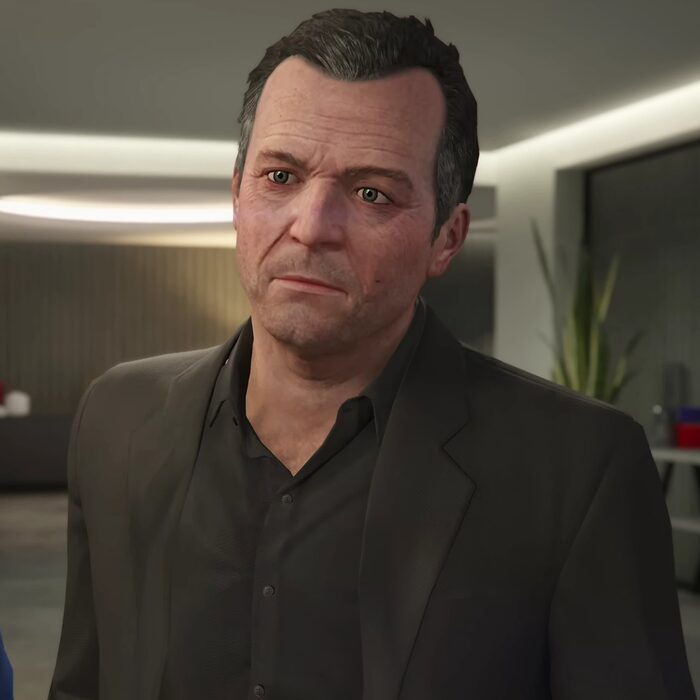
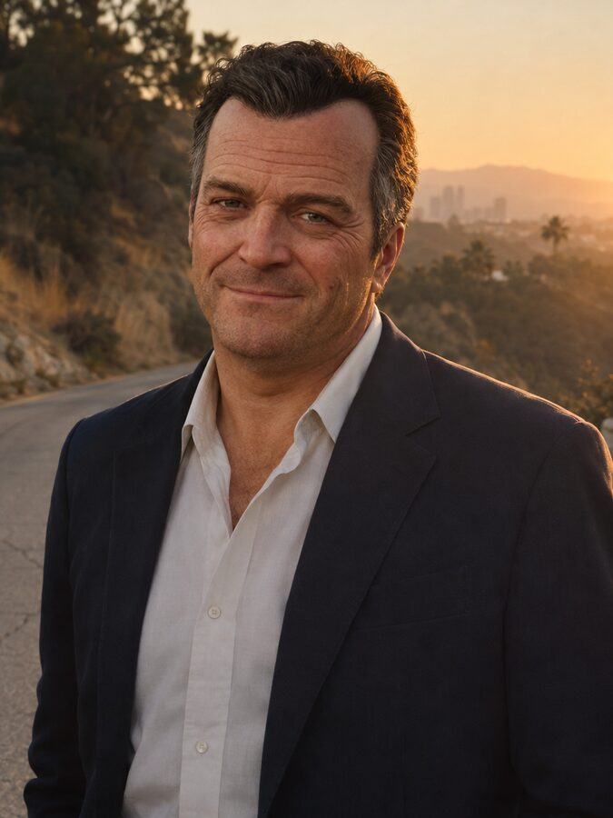
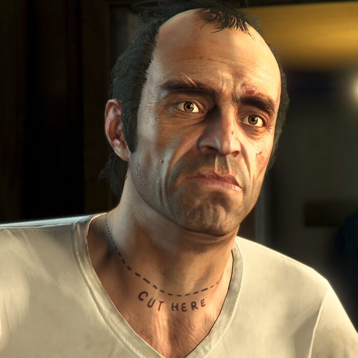

Usa come riferimento la foto che hai scelto e chiedi una scheda della stessa persona da più angolazioni. È questa scheda che legge il modello video, ed è lei che tiene lo stesso volto in ogni inquadratura.
Character reference sheet of the SAME real person shown in the reference image(s): keep the face, age, hair, skin and wardrobe strictly identical. Plain light grey studio background, even soft light, photographic, real person not a 3D render. Top row: 4 full-body views (front, three-quarter left, side profile, back). Bottom row: 4 head-and-shoulders views (front, three-quarter left, profile, three-quarter right) with a neutral expression. Real skin texture, pores, subtle asymmetry. No text, no labels, no numbers, no logos. Keep his warm, lovable look, not menacing. Wardrobe: off-white V-neck t-shirt with light road dust, worn blue jeans, brown work boots; the small dotted CUT HERE tattoo on the neck.
Fai lo stesso per ogni personaggio nuovo della tua storia. Qui è il capo della polizia che consegna le medaglie.
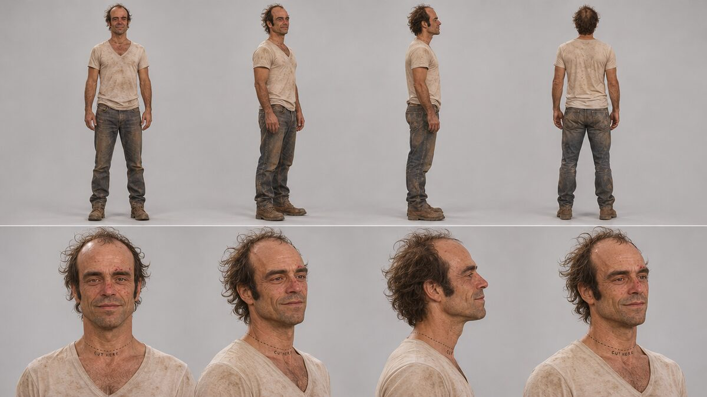
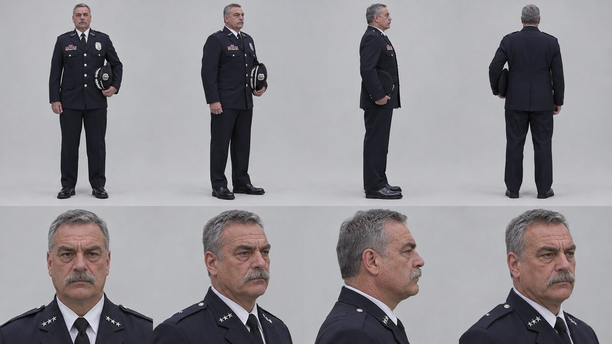
Un'immagine del posto senza nessuno: il viale di notte, le volanti in cerchio, la luce dell'elicottero. È tutto quello che ti serve come riferimento. Poliziotti, cittadini, divise e medaglie sono parole nel prompt, non altre immagini.
Empty location photograph, no people. A wide six-lane city boulevard at night in downtown Los Angeles, palm trees, closed shops and a gas station on the side, more than twenty black-and-white police cruisers parked at angles across the road forming a wide ring around an empty patch of asphalt in the center, all light bars flashing red and blue, doors open, a helicopter above casting a white spotlight cone onto the empty center. Night in a big Los Angeles-style city, wet asphalt reflecting red and blue police lights, sodium street lamps, light haze. Low wide angle from the road surface, 24mm. Look: a frame from a big-budget Hollywood crime feature, shot on ARRI Alexa 65, fine 35mm film grain, natural colors, real textures, no retouching. No logos, no watermark.
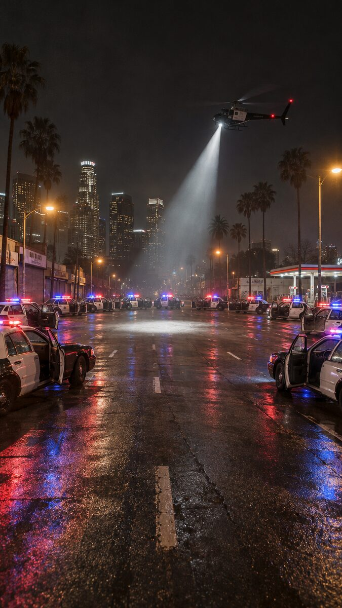
Una generazione di Seedance 2.5, 30 secondi, 9:16, con le schede e la location come riferimenti. Il prompt è scritto come parla un regista:
Three famous criminals kneel on a wet city boulevard at night, surrounded by the police, and instead of handcuffs the police chief gives them gold medals. Ultra-realistic live-action short film, a big-budget Hollywood crime film that turns into a warm comedy, 30 seconds, vertical 9:16, ten shots cut together inside one generation, shot on ARRI Alexa Mini with spherical primes, Cinestill 800T night colour, fine film grain. Use @Image1 as Michael, @Image2 as Franklin, @Image3 as Trevor and @Image4 as the police chief: each sheet is an identity reference only, never render a sheet, a grey studio background or more than one copy of anyone. @Image1 Michael: late 40s, short dark hair combed back with grey at the temples, heavy brow, tired knowing eyes; navy suit jacket open over a white open-collared shirt, dark trousers. @Image2 Franklin: about 25, slim, very short black hair, short neat beard; dark blue short-sleeve button shirt over a white long-sleeve tee, thin gold chain, dark jeans, white sneakers. @Image3 Trevor: about 45, balding with thin messy dark hair on the sides, weathered sunburnt skin, warm wild eyes, the small dotted CUT HERE tattoo around his neck; dirty off-white V-neck t-shirt, worn blue jeans, brown work boots; lovable, a little crazy, never menacing. @Image4 the chief: about 62, broad, short grey hair, thick grey moustache, deep forehead lines; dark navy formal chief uniform, four small silver stars on each collar, white shirt, black tie. Preserve each man's exact face, hair and clothes in every shot; do not transfer any trait of these four onto officers or extras. Use @Image5 as the environment: the same six-lane downtown boulevard, palm trees, the skyline ahead, a gas station on the right, more than twenty black-and-white police cruisers parked at angles in a wide ring, doors open, light bars flashing; the camera stays on this boulevard and invents no other street. The officers are about thirty men and women of mixed ages in dark navy long-sleeve uniforms, silver badges, black duty belts, a few in dark tactical vests, plain patches with no readable text. FIXED GEOGRAPHY: the three men kneel side by side on the wet asphalt in the empty centre of the ring, facing the skyline, Michael on the left, Trevor in the middle, Franklin on the right; the officers stand behind the open cruiser doors about fifteen metres away; the chief's cruiser is parked directly in front of the three men; a police helicopter hovers high above. LIGHTING: hard white helicopter spotlight from directly above as the key, pulsing red and blue light-bar strobes as the fill from all around, warm amber sodium street lamps as the rim from behind; the wet asphalt mirrors every colour. Palette: wet black, navy, police red, cobalt blue, sodium amber, the gold of the medals. CAMERA POSITIONS, reused: CAM A wide from behind the officers at the cruiser doors, shoulder height, 35mm, the three men small in the centre; CAM B low at ground level just behind the three men, looking toward the chief's cruiser, 35mm; CAM C front medium of the three men, chest up, 50mm; CAM D 85mm telephoto close-up on one face or on hands. Motion is subtle and real time: no slow motion, nobody runs, the camera only pushes in slowly or holds. Nobody speaks. [0:00-0:02] SHOT 1, CAM D, extreme close-up on @Image3 Trevor's face, locked-off. Rain drips down his sunburnt forehead, his hands are clasped on top of his head, he squints into the blinding white spotlight from above. Five red laser dots crawl across his cheek and his neck tattoo; red and blue strobes wash over his skin. His eyes dart to the side once, then hold: caught. [0:02-0:05] SHOT 2, CAM A, slow push-in. CUT. STATE CARRIED OVER: Trevor still kneels with hands on his head, laser dots on his chest. The wide reveal: @Image1 Michael, @Image3 Trevor and @Image2 Franklin kneel in the spotlight in the centre of the ring, dozens of officers crouch behind the open doors aiming pistols with red laser sights at them. It looks like the last scene of a crime film. Tense, total silence among the men. [0:05-0:08] SHOT 3, CAM B, low, locked-off. CUT. STATE CARRIED OVER: the three still kneel in the foreground, backs to camera, hands on heads. The door of the chief's cruiser opens; @Image4 the chief steps out onto the wet road and walks slowly toward them, face set like stone, his shoes splashing in the reflections. [0:08-0:11] SHOT 4, CAM C, locked-off. CUT. STATE CARRIED OVER: the three kneel, hands on heads, laser dots on their shirts. The chief stops in front of them and slides his right hand into his jacket pocket. @Image3 Trevor shuts his eyes and waits for the handcuffs; @Image1 Michael lowers his eyes, resigned; @Image2 Franklin glances sideways for a way out. Dread. [0:11-0:14] SHOT 5, CAM D on the chief's hand, slow tilt up to Trevor. CUT. Instead of handcuffs the chief pulls out a heavy gold medal with a star on a dark blue-and-red ribbon and lowers the ribbon over @Image3 Trevor's head; the medal settles on his dirty V-neck. Trevor opens his eyes and stares down at it, mouth slightly open, completely lost. [0:14-0:17] SHOT 6, CAM A, locked-off. CUT. STATE CARRIED OVER: Trevor wears the gold medal; the chief hangs the second and third medals around Michael's and Franklin's necks. The red laser dots vanish one by one; the officers lower their pistols, stand up behind the doors and start to applaud, smiling. @Image1 Michael and @Image2 Franklin turn and look at each other, still on their knees. Disbelief. [0:17-0:21] SHOT 7, CAM A, slow lateral track along the edge of the ring. CUT. STATE CARRIED OVER: all three wear gold medals, all officers applaud. From the sidewalk behind the cruisers ordinary people step into the light and join the applause: a young convenience-store clerk in a red work vest, a middle-aged taxi driver, a woman in office clothes holding up her car keys, two paramedics in dark blue uniforms with reflective stripes. Everyone claps and smiles warmly. [0:21-0:24] SHOT 8, CAM C, locked-off. CUT. STATE CARRIED OVER: medals on all three chests, applause all around. The three men slowly stand up from their knees. The chief stands straight and gives a formal salute. @Image3 Trevor, for the first time in his life, salutes back with total seriousness, chin up, chest out, the medal catching the spotlight. Pride. [0:24-0:28] SHOT 9, CAM C, gentle handheld. CUT. STATE CARRIED OVER: the three stand, medals on, crowd applauding. The chief shakes Trevor's hand once and turns to leave; Trevor pulls him back by the hand into a huge bear hug, chest to chest, the chief's moustache pressed against Trevor's shoulder, both faces clearly separate and visible. The chief is stunned, arms stuck at his sides. @Image1 Michael and @Image2 Franklin burst out laughing beside them; the officers behind them laugh and wipe their eyes. [0:28-0:30] SHOT 10, CAM A, locked-off. CUT. STATE CARRIED OVER: the hug in the centre of the ring, everyone around them clapping. The chief's stuck arms finally rise and he pats Trevor's back twice; the crowd cheers louder; then a hard cut to black. EMOTIONAL ARC: caught (0-2) → the tension of a real arrest (2-8) → dread (8-11) → shock (11-14) → disbelief (14-17) → warmth (17-21) → pride (21-24) → laughter that turns into tears (24-30). The expressions never jump backward and never reset between shots. STYLE AND REALISM: unretouched skin with visible pores and rain on it, no beauty filter, no video-game look, no CGI look, real wet night. The only text anywhere is POLICE on the cruiser doors. No subtitles, no captions, no text overlays, no logos. AUDIO: continuous night-city ambience: sirens that fade out after SHOT 3, the helicopter rotor, light rain, footsteps splashing, the clink of the medal, applause that grows from SHOT 6, laughter and a cheer at the end. No music, no speech. AVOID: jitter, temporal flicker, facial drift between shots, clothing change, extra fingers, merged faces or bodies in the hug, a character sheet or white background in any frame, chaotic composition.
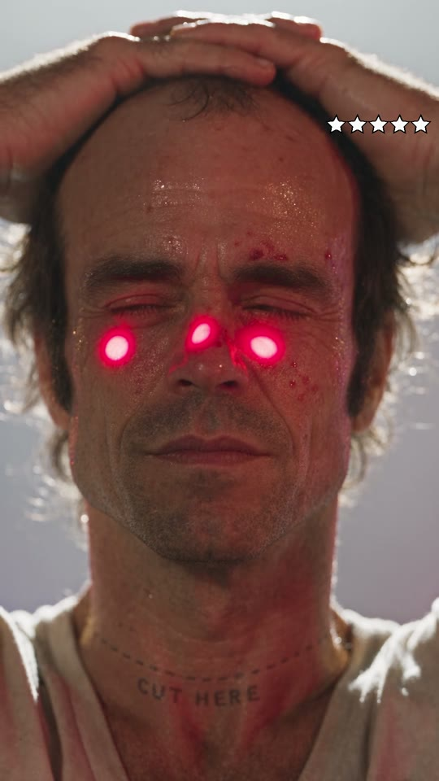
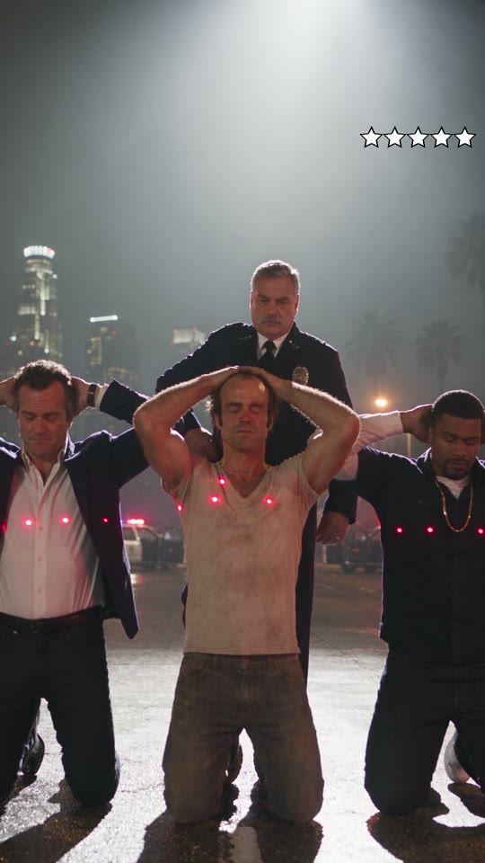
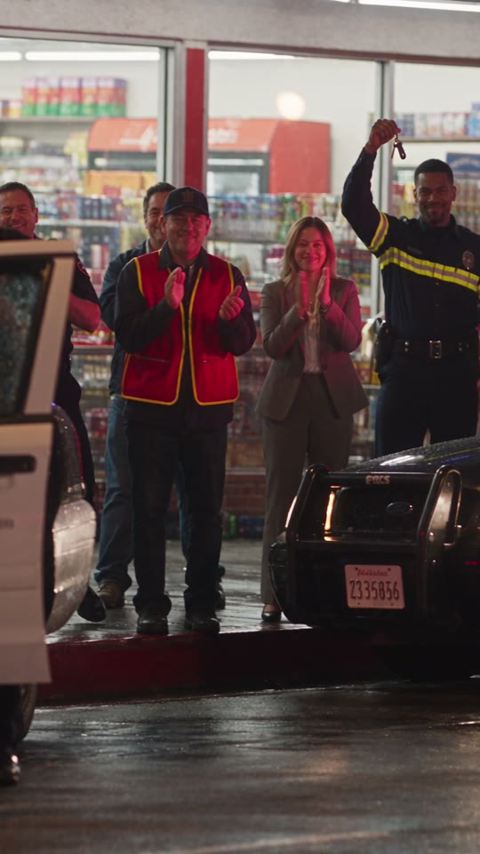
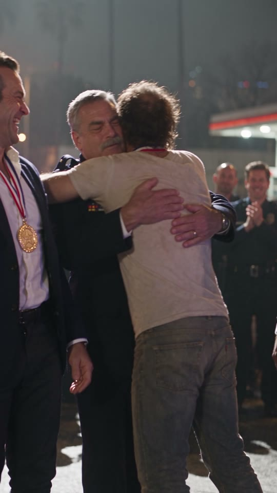
Genera ogni scena come draft (bozza) a 480p. È veloce ed economico, così puoi guardarla, sistemare il prompt e rigenerarla. Solo quando la ripresa è giusta, mandala in Full Quality su Kolbo. Renderizza di nuovo la stessa ripresa in 1080p nativo.
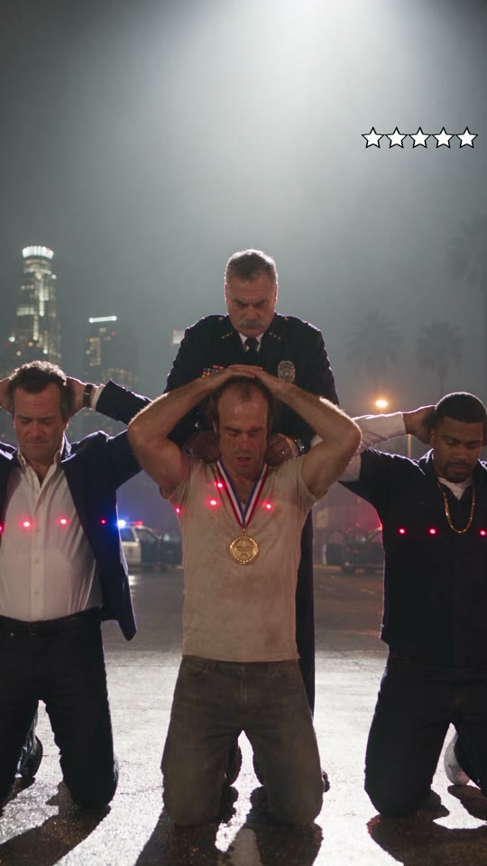
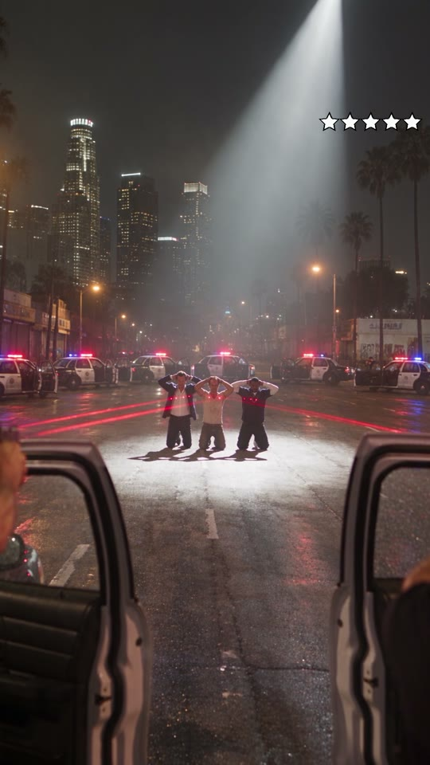
L'ultimo frame è quello che fa taggare gli amici. Ho usato le vere schermate di GTA V: cinque stelle del ricercato che lampeggiano e si spengono, e il "mission passed" giallo con la sua checklist. Non disegnarle a memoria, chiunque ci abbia giocato vedrà che sono sbagliate. Ho fatto ricostruire tutto a Claude partendo da screenshot veri del gioco.
I attached real screenshots of the GTA V "mission passed" screen. Rebuild it as a transparent PNG overlay for my video, exactly like the game: trace the yellow "mission passed" lettering from the screenshot (don't use a similar font), the same yellow and the same dark box under it with a title row, three rows with white checkboxes and a "Completion - Gold 100%" row with the gold dot. My texts: title "The Last Arrest", rows "13 Years of Chaos", "Never Busted", "Made the Police Cry". Then put it on the last frame of my video with a short fade-in, and keep it inside Instagram's safe zone: nothing in the top 250 px, the bottom 420 px or the right-side icons of a 1080x1920 frame.
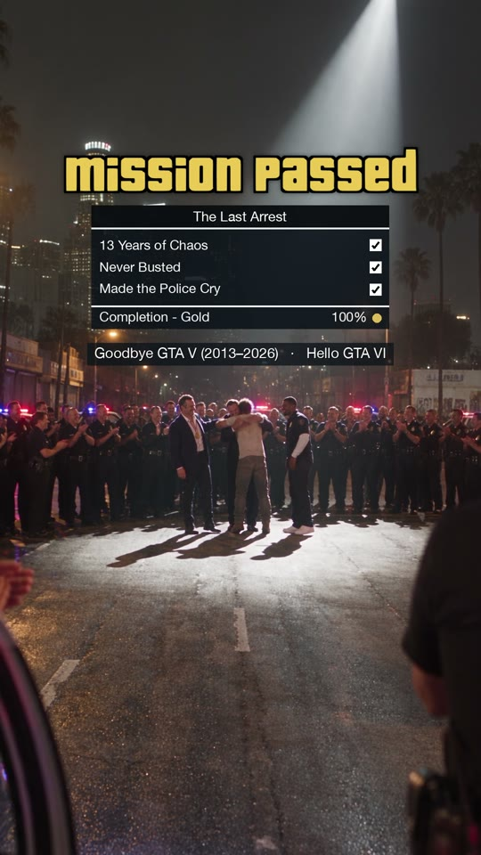
Problema: un "mission passed" disegnato a memoria. I fan se ne sono accorti in un secondo.
Soluzione: ricostruito da screenshot veri del gioco, con le scritte ricalcate e i colori veri.
Problema: le stelle e la schermata finale stavano dove Instagram mette i like e la didascalia.
Soluzione: tutto dentro la safe zone: niente nei 250 px in alto, nei 420 px in basso o nella colonna di icone a destra.
Problema: "See you in Vice City". Metà del mondo non l'ha capita.
Soluzione: "Goodbye GTA V · Hello GTA VI". Parole semplici che tutti conoscono.
GTA VI esce il 19 novembre. Tutti gli strumenti di questa pagina sono su Kolbo. Iscriviti dal mio link e prendi lo sconto sul primo mese.
Inizia su KolboNe hai fatto uno? Tagga @leviorel e @kolbo.ai, voglio vederlo.
Nuovi workflow di IA ogni settimana. Scegli la tua piattaforma: